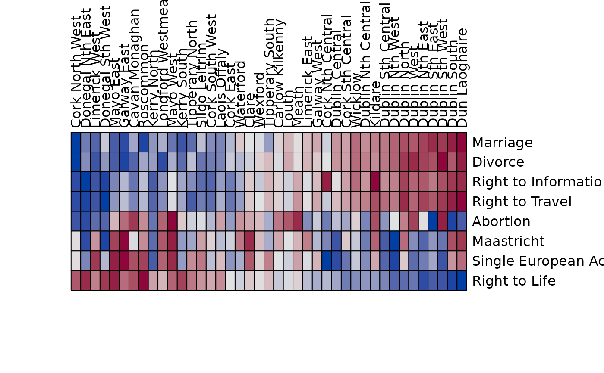
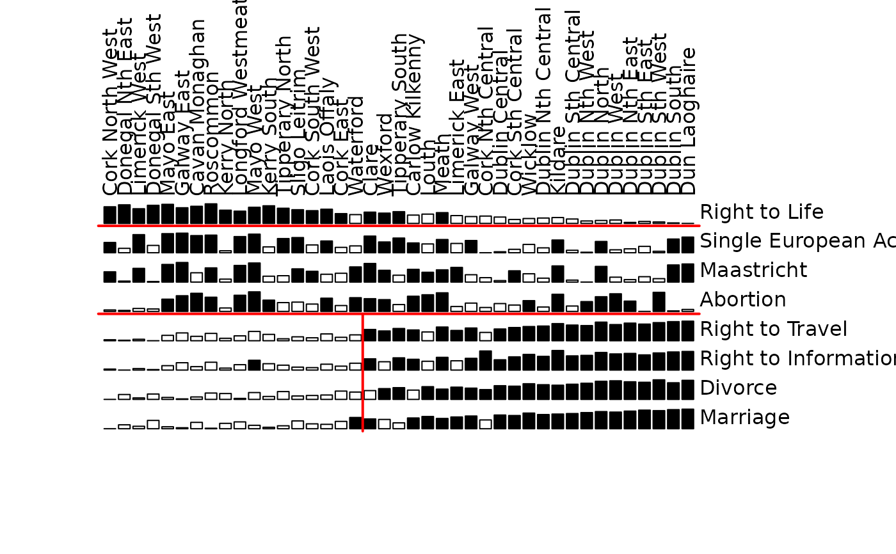

Plot a data matrix of cases and variables. Each value is represented by a symbol. Large values are highlighted. Note that Bertin arranges the cases horizontally and the variables as rows. The matrix can be rearranged using seriation techniques to make structure in the data visible (see Falguerolles et al 1997).
Usage
bertinplot(
x,
order = NULL,
panel.function = panel.bars,
highlight = TRUE,
row_labels = TRUE,
col_labels = TRUE,
flip_axes = TRUE,
...
)
panel.bars(value, spacing, hl)
panel.circles(value, spacing, hl)
panel.rectangles(value, spacing, hl)
panel.squares(value, spacing, hl)
panel.tiles(value, spacing, hl)
panel.blocks(value, spacing, hl)
panel.lines(value, spacing, hl)
bertin_cut_line(x = NULL, y = NULL, col = "red")
ggbertinplot(
x,
order = NULL,
geom = "bar",
highlight = TRUE,
row_labels = TRUE,
col_labels = TRUE,
flip_axes = TRUE,
prop = FALSE,
...
)Arguments
- x
a data matrix. Note that following Bertin, columns are variables and rows are cases. This behavior can be reversed using
reverse = TRUEinoptions.- order
an object of class
ser_permutationor a seriation method name to rearrangexbefore plotting. IfNULL, no rearrangement is performed.- panel.function
a function to produce the symbols. Currently available functions are
panel.bars(default),panel.circles,panel.rectangles,panel.tilesandpanel.lines. For circles and squares neg. values are represented by a dashed border. For blocks all blocks are the same size (can be used withshading = TRUE).- highlight
a logical scalar indicating whether to use highlighting. If
TRUE, all variables with values greater than the variable-wise mean are highlighted. To control highlighting, also a logical matrix or a matrix with colors with the same dimensions asxcan be supplied.- row_labels, col_labels
a logical indicating if row and column labels in
xshould be displayed. IfNULLthen labels are displayed if thexcontains the appropriate dimname and the number of labels is 25 or less. A character vector of the appropriate length with labels can also be supplied.- flip_axes
logical indicating whether to swap cases and variables in the plot. The default (
TRUE) is to plot cases as columns and variables as rows.- ...
ggbertinplot(): further parameters are passed on toggpimage().bertinplot(): further parameters can include:xlab, ylablabels (default: use labels fromx).spacingrelative space between symbols (default: 0.2).shadinguse gray shades to encode value instead of highlighting (default:FALSE).shading.functiona function that accepts a single argument in range \([.1, .8]\) and returns a valid corresponding color (e.g., usingrgb()).frameplot a grid to separate symbols (default:FALSE).marmargins (seepar()).gp_labelsgparobject for labels (seegpar())gp_panelsgparobject for panels (seegpar()).newpagea logical indicating whether to start the plot on a new page (seegrid.newpage()).popa logical indicating whether to pop the created viewports (seepop.viewport())?
- value, spacing, hl
are used internally for the panel functions.
- col, y
and x in
bertin_cut_line()are for adding a line to abertinplot()(not ggplot2-based).- geom
visualization type. Available ggplot2 geometries are:
"tile","rectangle","circle","line","bar","none".- prop
logical; change the aspect ratio so cells in the image have a equal width and height.
Details
The plot is organized as a matrix of symbols. The symbols are drawn by a
panel function, where all symbols of a row are drawn by one call of the
function (using vectorization). The interface for the panel function is
panel.myfunction(value, spacing, hl). value is the vector of
values for a row scaled between 0 and 1, spacing contains the
relative space between symbols and hl is a logical vector indicating
which symbol should be highlighted.
Cut lines can be added to an existing Bertin plot using
bertin_cut_line(x = NULL, y = NULL). x and y indicate
where to draw the cut line between two columns/rows. If
both x and y are specified then one can select a row/column and
the other can select a range to draw a line which does only span a part of
the row/column. It is important to call bertinplot() with the option
pop = FALSE.
bertinplot() uses grid.lines(), grid.rect() and grid.circle() to
draw the panels. For large matrices, the outline around rectangles may cover
most of the image. Use the parameter gp_panels = gpar(col = NA) to
remove the outline.
ggbertinplot() calls ggpimage() and all additional parameters are
passed on.
References
de Falguerolles, A., Friedrich, F., Sawitzki, G. (1997): A Tribute to J. Bertin's Graphical Data Analysis. In: Proceedings of the SoftStat '97 (Advances in Statistical Software 6), 11–20.
See also
Other plots:
VAT(),
dissplot(),
hmap(),
palette,
pimage()
Examples
data("Irish")
scale_by_rank <- function(x) apply(x, 2, rank)
x <- scale_by_rank(Irish[,-6])
# Use the the sum of absolute rank differences
order <- c(
seriate(dist(x, "minkowski", p = 1)),
seriate(dist(t(x), "minkowski", p = 1))
)
# Plot
bertinplot(x, order)
# Some alternative displays
bertinplot(x, order, panel.function = panel.tiles, shading_col = bluered(100), highlight = FALSE)

bertinplot(x, order, panel.function = panel.circles, spacing = -.2)
bertinplot(x, order, panel.function = panel.rectangles)
bertinplot(x, order, panel.function = panel.lines)
# Plot with cut lines (we manually set the order here)
order <- ser_permutation(c(6L, 9L, 29L, 10L, 32L, 22L, 2L, 35L,
24L, 30L, 33L, 25L, 37L, 36L, 8L, 27L, 4L, 39L, 3L, 40L, 38L,
1L, 31L, 34L, 28L, 23L, 5L, 11L, 7L, 41L, 13L, 26L, 17L, 15L,
12L, 20L, 14L, 18L, 19L, 16L, 21L),
c(4L, 2L, 1L, 6L, 7L, 8L, 5L, 3L))
bertinplot(x, order, pop=FALSE)
bertin_cut_line(, 4) ## horizontal line between rows 4 and 5
bertin_cut_line(, 7) ## separate "Right to Life" from the rest
bertin_cut_line(18, c(0, 4)) ## separate a block of large values (vertically)

# ggplot2-based plots
if (require("ggplot2")) {
library(ggplot2)
# Default plot uses bars and highlighting values larger than the mean
ggbertinplot(x, order)
# highlight values in the 4th quartile
ggbertinplot(x, order, highlight = quantile(x, probs = .75))
# Use different geoms. "none" lets the user specify their own geom.
# Variables set are row, col and x (for the value).
ggbertinplot(x, order, geom = "tile", prop = TRUE)
ggbertinplot(x, order, geom = "rectangle")
ggbertinplot(x, order, geom = "rectangle", prop = TRUE)
ggbertinplot(x, order, geom = "circle")
ggbertinplot(x, order, geom = "line")
# Tiles with diverging color scale
ggbertinplot(x, order, geom = "tile", prop = TRUE) +
scale_fill_gradient2(midpoint = mean(x))
# Custom geom (geom = "none"). Defined variables are row, col, and x for the value
ggbertinplot(x, order, geom = "none", prop = FALSE) +
geom_point(aes(x = col, y = row, size = x, color = x > 30), pch = 15) +
scale_size(range = c(1, 10))
# Use a ggplot2 theme with theme_set()
old_theme <- theme_set(theme_minimal() +
theme(panel.grid = element_blank())
)
ggbertinplot(x, order, geom = "bar")
theme_set(old_theme)
}
#> Scale for fill is already present.
#> Adding another scale for fill, which will replace the existing scale.